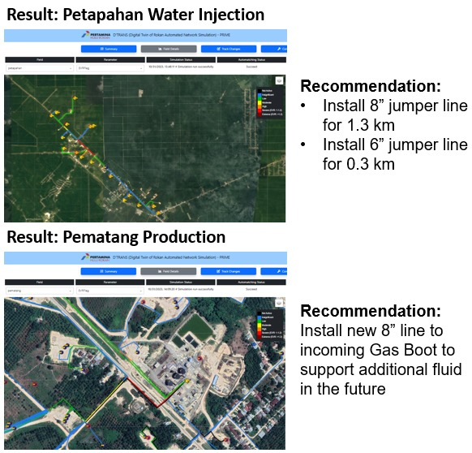

Back

Problem Statement
- Additional fluid from massive drilling plan in WK Rokan potential backpressure issues in production & water injection piping network.
- Hydraulic simulation is extremely important tool to support this plan, especially for debottlenecking purpose.
- Current tool has limitations: high man hours required to develop/update the complex model, slow to reach convergence, limited options for integration with other tools/databases.
- This limits current capability to keep up with massive and aggressive field development in WK Rokan and expand the tool's integration in the future.
Opportunity
- Integration of pipeline geospatial data and automation algorithms into hydraulic simulation for cost optimization and debottlenecking process
Main Objective
- Debottlenecking (reducing backpressure), minimize LPO, & cost optimization